vignettes/articles/GDA_tutorial.Rmd
GDA_tutorial.Rmd
This tutorial presents the use of the GDAtools package for
geometric data analysis. For further information on the statistical
procedures themselves, it is recommended to refer to the books
referenced on the home page of the website.
For this example of Multiple Correspondence Analysis (MCA), we will
use one of the data sets provided with the package. This is information
about the tastes and cultural practices of 2000 individuals: listening
to musical genres (French popular music, rap, rock, jazz and classical)
and taste for film genres (comedy, crime film, animation, science
fiction, love film, musical). These 11 variables will be used as
“active” variables in the MCA and are completed by 3 “supplementary”
variables: gender, age and education level.
'data.frame': 2000 obs. of 14 variables:
$ FrenchPop: Factor w/ 3 levels "No","Yes","NA": 2 1 2 1 2 1 1 1 1 2 ...
$ Rap : Factor w/ 3 levels "No","Yes","NA": 1 1 1 1 1 1 1 1 1 1 ...
$ Rock : Factor w/ 3 levels "No","Yes","NA": 1 1 2 1 1 2 1 1 2 1 ...
$ Jazz : Factor w/ 3 levels "No","Yes","NA": 1 2 1 1 1 1 1 1 1 1 ...
$ Classical: Factor w/ 3 levels "No","Yes","NA": 1 2 1 2 1 1 1 1 1 1 ...
$ Comedy : Factor w/ 3 levels "No","Yes","NA": 1 2 1 1 1 1 2 2 2 2 ...
$ Crime : Factor w/ 3 levels "No","Yes","NA": 1 1 1 1 2 1 1 1 1 1 ...
$ Animation: Factor w/ 3 levels "No","Yes","NA": 1 1 1 1 1 1 1 1 1 1 ...
$ SciFi : Factor w/ 3 levels "No","Yes","NA": 2 1 1 1 1 2 1 1 1 1 ...
$ Love : Factor w/ 3 levels "No","Yes","NA": 1 1 2 1 1 1 1 1 1 1 ...
$ Musical : Factor w/ 3 levels "No","Yes","NA": 1 1 1 1 1 1 1 1 1 1 ...
$ Gender : Factor w/ 2 levels "Men","Women": 1 1 2 1 2 2 2 2 1 1 ...
$ Age : Factor w/ 3 levels "15-24","25-49",..: 2 3 2 3 2 2 2 2 1 3 ...
$ Educ : Factor w/ 4 levels "None","Low","Medium",..: 3 4 3 4 2 1 3 2 2 2 ...
The active variables all have a “non response” (“NA”) category, which
concerns some individuals.
summary(Taste[,1:11]) FrenchPop Rap Rock Jazz Classical Comedy Crime
No : 741 No :1730 No :1455 No :1621 No :1443 No :1141 No :1430
Yes:1249 Yes: 261 Yes: 535 Yes: 364 Yes: 552 Yes: 856 Yes: 555
NA : 10 NA : 9 NA : 10 NA : 15 NA : 5 NA : 3 NA : 15
Animation SciFi Love Musical
No :1905 No :1845 No :1768 No :1923
Yes: 91 Yes: 143 Yes: 225 Yes: 66
NA : 4 NA : 12 NA : 7 NA : 11
Specific MCA makes it possible to cancel these
categories out in the construction of the factorial space, while keeping
all the individuals. We start by locating the rank of the categories we
want to cancel out.
getindexcat(Taste[,1:11]) [1] "FrenchPop.No" "FrenchPop.Yes" "FrenchPop.NA" "Rap.No"
[5] "Rap.Yes" "Rap.NA" "Rock.No" "Rock.Yes"
[9] "Rock.NA" "Jazz.No" "Jazz.Yes" "Jazz.NA"
[13] "Classical.No" "Classical.Yes" "Classical.NA" "Comedy.No"
[17] "Comedy.Yes" "Comedy.NA" "Crime.No" "Crime.Yes"
[21] "Crime.NA" "Animation.No" "Animation.Yes" "Animation.NA"
[25] "SciFi.No" "SciFi.Yes" "SciFi.NA" "Love.No"
[29] "Love.Yes" "Love.NA" "Musical.No" "Musical.Yes"
[33] "Musical.NA"
The vector of these ranks is then given as an argument in the specific
MCA function speMCA().
Alternatively, we can use the list of labels of the “junk” categories.
junk <- c("FrenchPop.NA", "Rap.NA", "Rock.NA", "Jazz.NA", "Classical.NA",
"Comedy.NA", "Crime.NA", "Animation.NA", "SciFi.NA", "Love.NA",
"Musical.NA")
mca <- speMCA(Taste[,1:11], excl = junk)The labels of these categories can be identified using the function
ijunk(),
which launches an interactive application for this purpose and allows to
copy and paste the appropriate code.
The Benzécri corrected inertia rates give an idea of how much information is represented by each axis.
modif.rate(mca)$modif mrate cum.mrate
1 67.30532896 67.30533
2 22.64536000 89.95069
3 7.17043134 97.12112
4 2.26387669 99.38500
5 0.59232858 99.97733
6 0.02267443 100.00000We can see here that the first two axes capture most of the
information (nearly 90%). In the following, we will therefore
concentrate on the plane formed by axes 1 and 2.
The cloud of individuals does not have a particular shape (triangle, horseshoe…), the points seem to be distributed in the whole plane (1,2).
ggcloud_indiv(mca)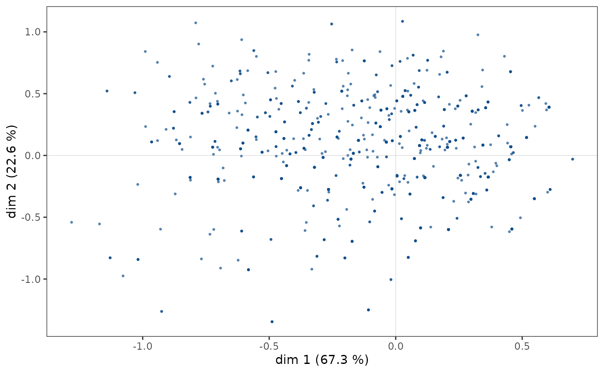
However, in some cases, points may overlap and the structure of the
cloud of individuals is only imperfectly rendered by a scatter plot. It
is then possible to complete the first graph by a representation of the
density of points in the plane. The function ggcloud_indiv()
allows this to be done using contours (like the contour lines of a
topographic map) or hexagonal surfaces (colored with a color gradient
according to the number of points located in the hexagon).
ggcloud_indiv(mca, col = "lightgray", density = "contour")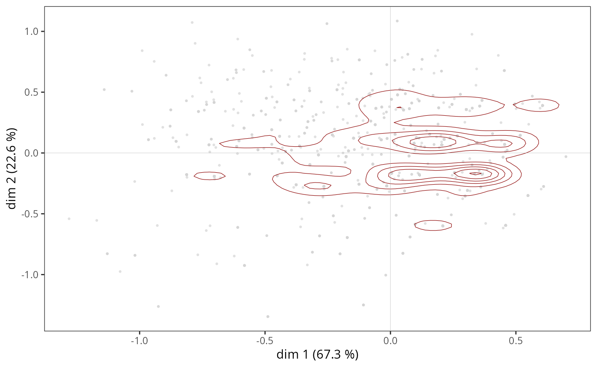
ggcloud_indiv(mca, density = "hex", hex.bin = 10)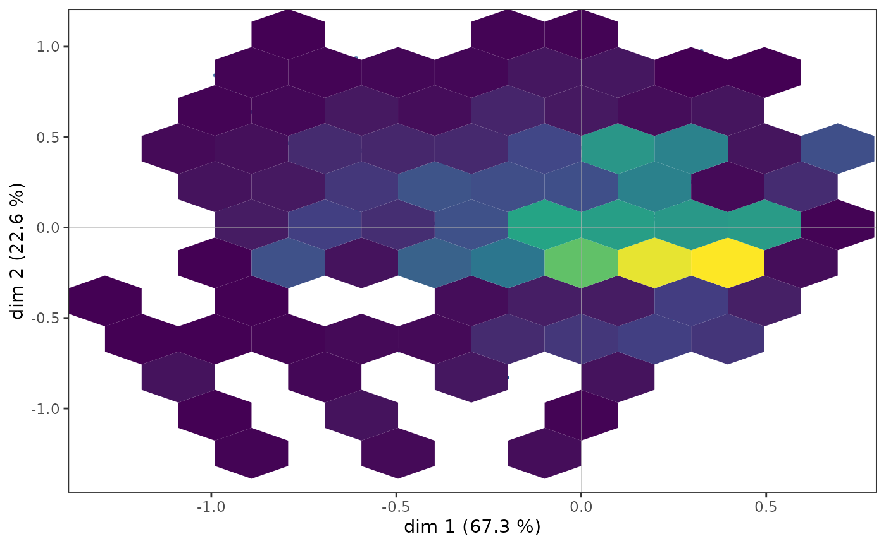
Regardless of the density representation used, we observe that the
points seem to be more concentrated in an area immediately to the right
of the vertical axis.
NB: ggcloud_indiv()
also allows the name of the observations to be displayed, when
this is of interest from an interpretation point of view.
On the cloud of variables:
listening to jazz and classical music and liking musicals seem to be opposed to listening to rap and liking comedies on axis 1;
the taste for animation and science fiction to the taste for love movies and musicals on axis 2.
ggcloud_variables(mca, shapes = FALSE, legend = "none")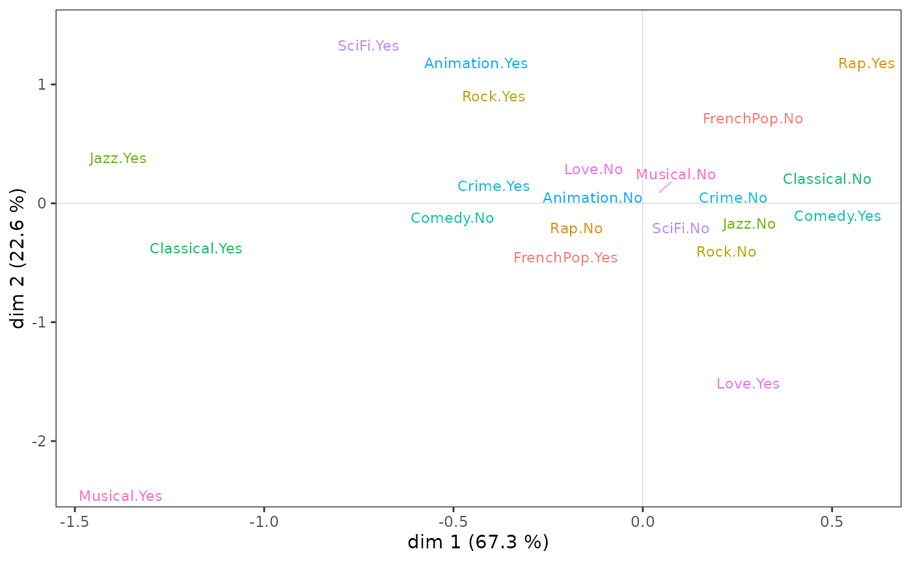
Many options are possible, including:
adding symbols (circles, triangles, etc.) in addition to the labels of the categories ;
selection or highlighting of the most important categories according to different criteria (contribution, quality of representation, typicality, etc.);
using size, italics, bold and underlining to identify the most important categories.
The results are traditionally represented in a plane, i.e. in two
dimensions (here dimensions 1 and 2). But it is sometimes easier to
concentrate the interpretation on one axis at a time, which is possible
with the function ggaxis_variables()
(parameterized here to display the labels of the categories with a size
proportional to their contribution to the construction of the axis).
ggaxis_variables(mca, axis = 1, prop = "ctr")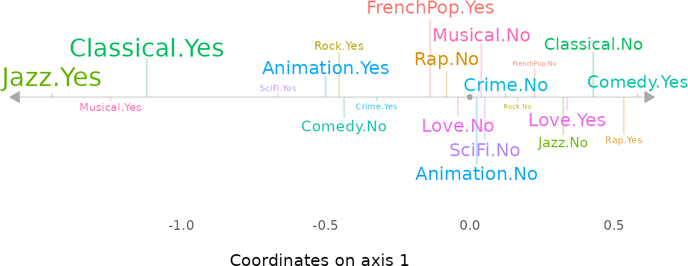
However, to be robust, the interpretation of the factorial plane cannot stop at a visual examination of the cloud of variables. This must be completed by a careful analysis of statistical indicators, in particular the contributions of the categories to the construction of the axes and their quality of representation.
Most of the aids to interpretation and other useful information are
present in the object created by speMCA()
function. The package provides several functions to extract and organize
this information.
contrib()
presents the contributions of the variables and the categories of these
variables to the construction of each axis and to the construction of
the cloud.
dimcontrib()
extracts the contributions of the individuals and the categories of
variables to the construction of a particular axis.
dimdescr()
identifies the variables and variable categories most statistically
associated with the different axes. The measures of association used are
the correlation ratios (eta²) for the
variables and the correlation coefficients for the
categories.
The function planecontrib()
extracts the contributions of individuals and of the categories of
variables to the construction of a particular plane.
The function tabcontrib()
allows, for a given axis, to summarize the main contributions (by
default, only the contributions above the average are presented).
tabcontrib(mca, dim = 1)| Variable | Category | Weight | Quality of representation | Contribution (left) | Contribution (right) | Total contribution | Cumulated contribution | Contribution of deviation | Proportion to variable |
|---|---|---|---|---|---|---|---|---|---|
| Classical | Yes | 552 | 0.478 | 23.08 | 31.88 | 31.88 | 31.88 | 100 | |
| No | 1443 | 0.474 | 8.8 | ||||||
| Jazz | Yes | 364 | 0.467 | 25.49 | 31.15 | 63.04 | 31.15 | 100 | |
| No | 1621 | 0.448 | 5.66 | ||||||
| Comedy | Yes | 856 | 0.253 | 9.66 | 16.88 | 79.92 | 16.88 | 100 | |
| No | 1141 | 0.252 | 7.22 |
The classical music and jazz listening variables alone contribute
more than 60% to the construction of axis 1. Listening to classical
music and jazz is thus opposed to not listening to them, and secondarily
to the taste for comedies.
tabcontrib(mca, dim = 2) | Variable | Category | Weight | Quality of representation | Contribution (left) | Contribution (right) | Total contribution | Cumulated contribution | Contribution of deviation | Proportion to variable |
|---|---|---|---|---|---|---|---|---|---|
| Rock | Yes | 535 | 0.229 | 12.99 | 17.77 | 17.77 | 17.77 | 100 | |
| No | 1455 | 0.226 | 4.78 | ||||||
| Love | Yes | 225 | 0.250 | 17.24 | 17.24 | 35 | 17.24 | 88.79 | |
| FrenchPop | No | 741 | 0.199 | 9.69 | 15.39 | 50.39 | 15.39 | 100 | |
| Yes | 1249 | 0.196 | 5.69 | ||||||
| Musical | Yes | 66 | 0.191 | 14.33 | 14.33 | 64.72 | 14.33 | 96.61 | |
| SciFi | Yes | 143 | 0.160 | 11.49 | 11.49 | 76.21 | 11.49 | 92.72 | |
| Rap | Yes | 261 | 0.164 | 11.05 | 11.05 | 87.27 | 11.05 | 86.56 |
On axis 2, listening to rock and rap music and the taste for science fiction films are opposed to the taste for love films and musicals and the listening of French variety music.
One way to summarize the relationships between the active variables and the factorial axes is the so-called “square of relationships” (carré des liaisons) proposed by Escofier and Pagès (2008). It uses correlation ratios to represent these relationships.
ggeta2_variables(mca) + ggtitle("Square of relationships")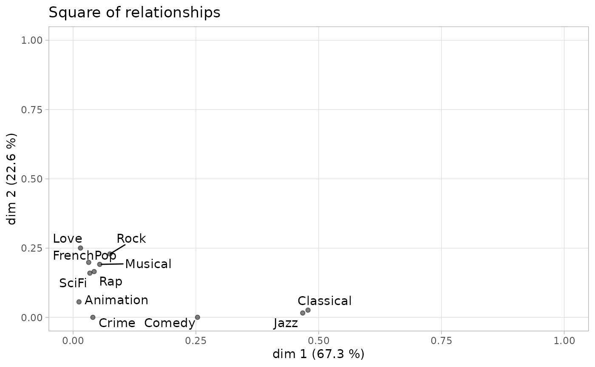
We see that listening to jazz and classical music is highly correlated with axis 1 and not at all with axis 2, and that the active variables most correlated with axis 2 are only moderately so.
We can go further by studying the relationship between the factorial space and the supplementary variables, in this case gender, age and education. A first step is to project the supplementary variables onto the cloud of variables.
vcloud <- ggcloud_variables(mca, shapes=FALSE, col="lightgray")
ggadd_supvars(vcloud, mca, Taste[,c("Gender","Age","Educ")])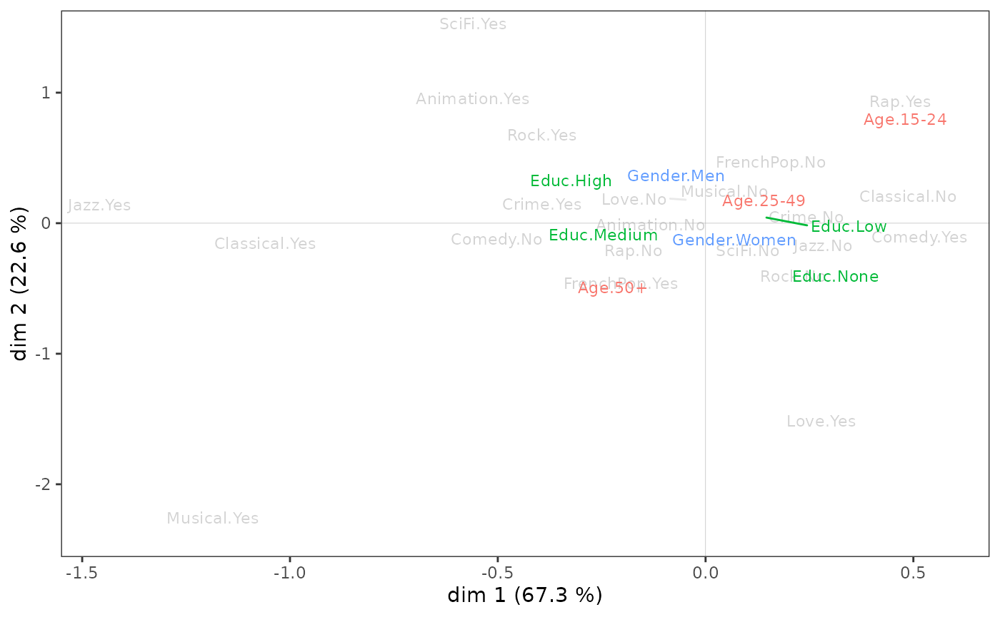
It is possible to set the display of each of the supplementary
variables separately with the function ggadd_supvar()
(without “s”). However, there are several drawbacks: more lines of code
and the risk of overlapping of the labels of the categories.
The level of education seems to be associated above all with axis 1, the most educated being on the side of jazz and classical music listening. Gender seems to be linked only to axis 2, with women at the bottom of the plane and men at the top. As for age, it is associated with both axes: individuals move from the northeast quadrant to the southwest quadrant as their age increases.
These initial observations can be statistically confirmed by measuring the degree of association between the supplementary variables and the axes using the correlation ratio (eta²).
dim.1 dim.2
Gender 0.0 6.0
Age 3.8 14.2
Educ 5.9 3.3Education is the supplementary variable most associated with axis 1: it “explains” 5.9% of the variance of individual coordinates on this axis. Age is also associated with the first axis, but to a lesser extent, and gender not at all.
On axis 2, age is the most structuring variable, ahead of gender and education level. We also see that age is clearly more related to axis 2 than to axis 1.
At the level of the categories, the association of an supplementary variable category with an axis can be characterized from the correlation coefficients.
| categories | mean.y.in.xcat | mean.y.global | sd.y.in.xcat | sd.y.global | cor |
|---|---|---|---|---|---|
| Age.15-24 | 0.156 | 0 | 0.355 | 0.369 | 0.176 |
| Educ.None | 0.094 | 0 | 0.324 | 0.369 | 0.145 |
| Educ.Low | 0.052 | 0 | 0.355 | 0.369 | 0.100 |
| Age.25-49 | 0.006 | 0 | 0.358 | 0.369 | 0.015 |
| Gender.Women | 0.004 | 0 | 0.370 | 0.369 | 0.012 |
| Gender.Men | -0.005 | 0 | 0.368 | 0.369 | -0.012 |
| Educ.Medium | -0.040 | 0 | 0.376 | 0.369 | -0.051 |
| Age.50+ | -0.061 | 0 | 0.369 | 0.369 | -0.142 |
| Educ.High | -0.141 | 0 | 0.382 | 0.369 | -0.213 |
On axis 1, those with no or little education and those aged 15-24 are opposed to those with more education and those aged 50 and over. The other categories appear to have little relationship with the axis (their correlation coefficients, in the last column of the table, are close to 0).
des$dim.2$categories| categories | mean.y.in.xcat | mean.y.global | sd.y.in.xcat | sd.y.global | cor |
|---|---|---|---|---|---|
| Age.15-24 | 0.236 | 0 | 0.320 | 0.342 | 0.288 |
| Gender.Men | 0.088 | 0 | 0.302 | 0.342 | 0.245 |
| Age.25-49 | 0.049 | 0 | 0.333 | 0.342 | 0.123 |
| Educ.High | 0.076 | 0 | 0.327 | 0.342 | 0.123 |
| Educ.Low | 0.016 | 0 | 0.341 | 0.342 | 0.034 |
| Educ.Medium | 0.007 | 0 | 0.335 | 0.342 | 0.009 |
| Educ.None | -0.100 | 0 | 0.341 | 0.342 | -0.167 |
| Gender.Women | -0.081 | 0 | 0.357 | 0.342 | -0.245 |
| Age.50+ | -0.131 | 0 | 0.299 | 0.342 | -0.330 |
On axis 2, men, those under 50, and those with higher education contrast with women, those over 50, and those with no degree.
Let’s continue the analysis by focusing on one supplementary
variable, education level. The function supvar()
provides:
the coordinates of the categories on the axes,
their squared cosines (which gives the quality of representation of a category on an axis),
their dispersion (variance) on the axes,
the correlation ratios (eta²) between the variable and the axes,
the typicality tests (to which we will return in the next section),
the correlation coefficients between the categories and the axes.
supvar(mca, Taste$Educ)$weight
None Low Medium High
490 678 357 475
$coord
dim.1 dim.2 dim.3 dim.4 dim.5
None 0.254716 -0.293253 -0.191563 0.094510 -0.050520
Low 0.140147 0.046951 0.002259 -0.063613 -0.044181
Medium -0.109057 0.019669 0.054436 0.070183 -0.027962
High -0.380835 0.220714 0.153475 -0.059443 0.136194
$cos2
dim.1 dim.2 dim.3 dim.4 dim.5
None 0.021054 0.027906 0.011908 0.002899 0.000828
Low 0.010073 0.001131 0.000003 0.002075 0.001001
Medium 0.002584 0.000084 0.000644 0.001070 0.000170
High 0.045175 0.015173 0.007337 0.001101 0.005777
$var
dim.1 dim.2 dim.3 dim.4 dim.5
None 0.104915 0.116125 0.115232 0.103800 0.086031
Low 0.125921 0.116092 0.109029 0.087945 0.087735
Medium 0.141298 0.112505 0.097031 0.102449 0.094541
High 0.145983 0.107170 0.091066 0.106049 0.113352
within 0.128284 0.113341 0.104141 0.098718 0.094616
between 0.008061 0.003923 0.001598 0.000524 0.000555
total 0.136345 0.117264 0.105739 0.099242 0.095172
eta2 0.059123 0.033455 0.015115 0.005279 0.005832
$typic
dim.1 dim.2 dim.3 dim.4 dim.5
None 6.487410 -7.468929 -4.878958 2.407110 -1.286704
Low 4.487336 1.503312 0.072336 -2.036827 -1.414633
Medium -2.272883 0.409932 1.134503 1.462690 -0.582753
High -9.502876 5.507427 3.829615 -1.483270 3.398406
$pval
dim.1 dim.2 dim.3 dim.4 dim.5
None 0.000000 0.000000 0.000001 0.016079 0.198197
Low 0.000007 0.132758 0.942334 0.041667 0.157176
Medium 0.023033 0.681856 0.256584 0.143552 0.560059
High 0.000000 0.000000 0.000128 0.138003 0.000678
$cor
dim.1 dim.2 dim.3 dim.4 dim.5
None 0.145 -0.167 -0.109 0.054 -0.029
Low 0.100 0.034 0.002 -0.046 -0.032
Medium -0.051 0.009 0.025 0.033 -0.013
High -0.213 0.123 0.086 -0.033 0.076Graphically, we can represent the subcloud of each category using a concentration ellipse, which is centered on the mean point and encompasses 86% of individuals with that category.
icloud <- ggcloud_indiv(mca, col = "lightgrey")
ggadd_kellipses(icloud, mca, Taste$Educ, label = FALSE)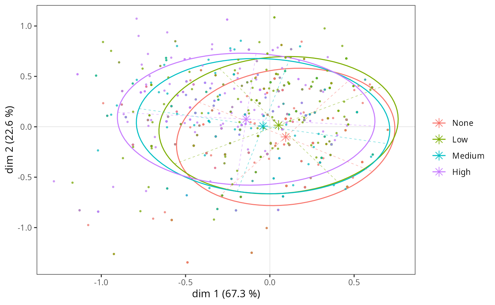
Even if, as we have seen, the education level categories are ordered along axis 1, the subclouds overlap to a large extent, because the association between the variable and the axis is moderate.
Let us now look more specifically at the subcloud of the most highly
educated individuals (the 4th category of the variable
Educ).
ggadd_kellipses(icloud, mca, Taste$Educ, sel = 4, legend = "none")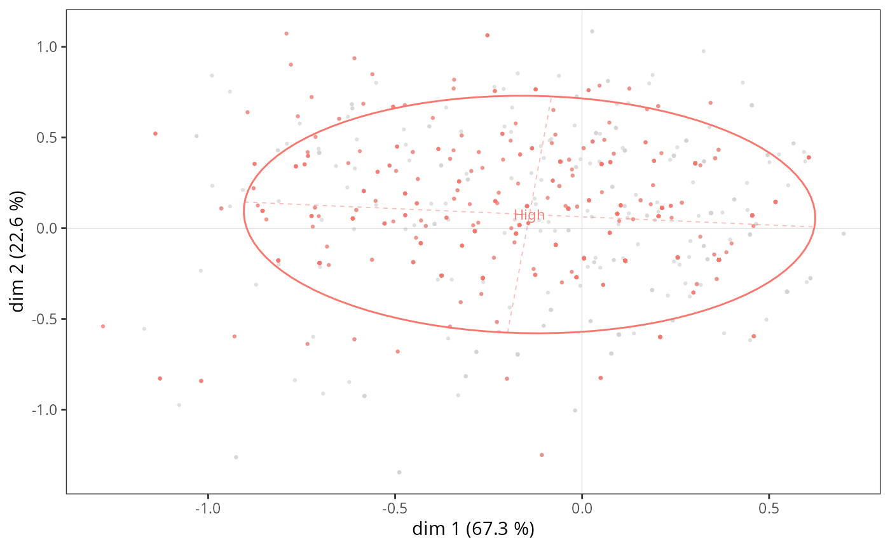
A concentration ellipse is useful because it jointly represents the mean point of the category and the dispersion of the subcloud along the axes. Here, we see that although the mean point of the most highly educated individuals is located in the northwest quadrant, a non-negligible portion of the points in the subcloud are to the right and/or bottom of the plane.
The concentration ellipses, on the other hand, give only an imperfect representation of the distribution of the points of the subcloud, because of the possible superposition of the points (in a similar way to what we have seen for the cloud of individuals) and its centering on the mean point. It can therefore be interesting to complete a concentration ellipse with a representation of the density of the points in the subcloud, in the form of contours or surfaces.
ggadd_density(icloud, mca, var = Taste$Educ, cat = "High", density = "contour")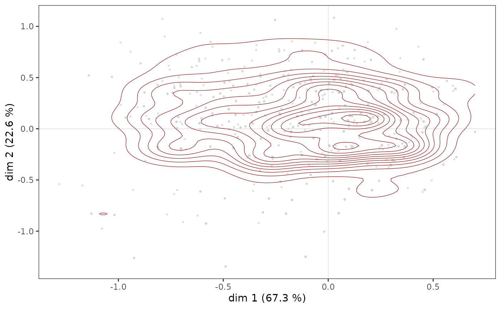
ggadd_density(icloud, mca, var = Taste$Educ, cat = "High", density = "area", ellipse = TRUE)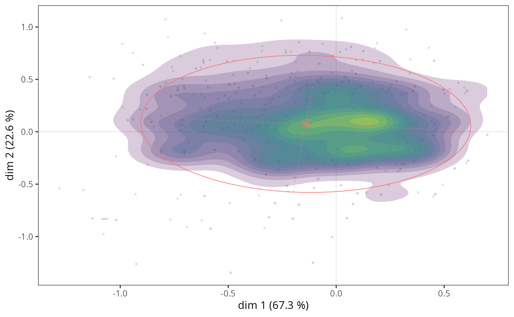
Here we see that there appears to be a concentration of highly educated individuals immediately to the right of the vertical axis, in an area that also corresponds to a concentration of points in the cloud of individuals (see above).
A further step in the analysis consists in neutralizing the influence of the distribution of the points of the cloud of individuals on that of the subcloud, by asking in which parts of the plane the most highly educated are over/under represented. In the following graph, we represent in each hexagonal tile the proportion of highly educated individuals, centered in relation to the proportion of highly educated individuals in the whole sample. In other words, we represent the over/under-representation of highly educated individuals in each portion of the plane. The graph is made more readable by a smoothing procedure derived from spatial analysis in geography (inverse distance weighting).
ggsmoothed_supvar(mca, var = Taste$Educ, cat = "High", center = TRUE)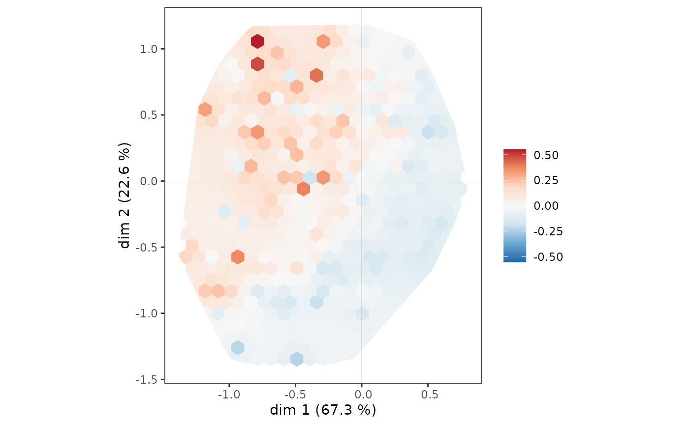
The most highly educated individuals are overrepresented throughout the northwest quadrant, but also among the westernmost of the southwest quadrant.
Interactions between several supplementary variables can also be studied, for example here between gender and age.
ggadd_interaction(vcloud, mca, Taste$Gender, Taste$Age, legend = "none")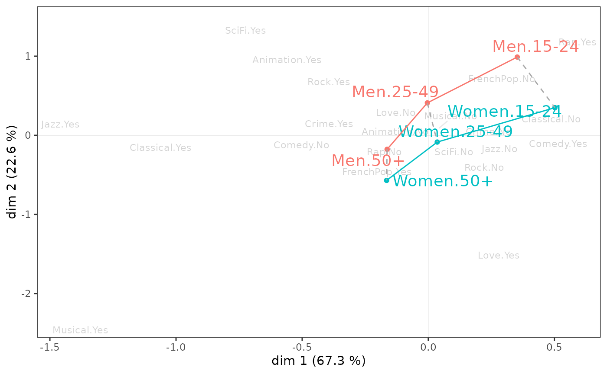
Gender and age appear to interact little in the plane (1,2). Note, however, that on axis 1, the differences between the youngest and oldest individuals are larger for women than for men, and that on axis 2, the youngest individuals differ more by gender than the oldest.
Note: The analyses performed here on supplementary variables are
similarly feasible for supplementary individuals, using the
functions supind()
and ggadd_supind().
This is useful when some individuals were excluded from the MCA because
they were too atypical or because some information was missing, for
example.
If one wishes to assess the generalizability of the results, one can complement the descriptive analyses above with statistical inference procedures that borrow from inductive data analysis and combinatorial approaches (for this part even more than for the others, we refer to Le Roux and Rouanet, 2004 & 2010).
The typicality problem consists in asking whether a group of individuals can be assimilated to the reference population or whether it is atypical. A typicality test calculates a combinatorial p-value, which defines the “degree of typicality” of the mean point of the group of individuals. A low p-value is considered statistically significant in the combinatorial sense and reflects a difference that is probably not due to chance.
dimtypicality(mca, Taste[, c("Gender","Age","Educ")], dim = c(1,2))$dim.1
weight test.stat p.value
Age.15-24 297 7.890052 0.00000
Educ.None 490 6.487410 0.00000
Educ.Low 678 4.487336 0.00001
Age.25-49 849 0.669142 0.50340
Gender.Women 1042 0.543265 0.58695
Gender.Men 958 -0.543265 0.58695
Educ.Medium 357 -2.272883 0.02303
Age.50+ 854 -6.340738 0.00000
Educ.High 475 -9.502876 0.00000
$dim.2
weight test.stat p.value
Age.15-24 297 12.875430 0.00000
Gender.Men 958 10.972527 0.00000
Age.25-49 849 5.520379 0.00000
Educ.High 475 5.507427 0.00000
Educ.Low 678 1.503312 0.13276
Educ.Medium 357 0.409932 0.68186
Educ.None 490 -7.468929 0.00000
Gender.Women 1042 -10.972527 0.00000
Age.50+ 854 -14.772247 0.00000At a 5 percent threshold, the mean points for women, men, and middle-aged people are not significantly different from the mean point for the entire population on axis 1 (i.e., 0). On axis 2, it is the mean points of the low and middle education levels that do not differ significantly from the origin.
One can study the results of typicality tests for a supplementary
variable in particular using the function supvar().
dim.1 dim.2
None 0.000000 0.000000
Low 0.000007 0.132758
Medium 0.023033 0.681856
High 0.000000 0.000000We see that, on axis 1, all the education level categories are significantly different from 0 at a 5% threshold, they are atypical of the cloud of all individuals, but this is not the case for the “Low” and “Medium” categories on axis 2.
Confidence ellipses follow the same logic as typicality tests. With a conventional significance level of 5%, the confidence ellipse is a 95% confidence zone representing, for a category, the set of possible mean points that are not significantly different from the observed mean point.
# p <- ggcloud_indiv(mca, col='lightgrey')
ggadd_ellipses(icloud, mca, Taste$Educ, level = 0.05, label = FALSE)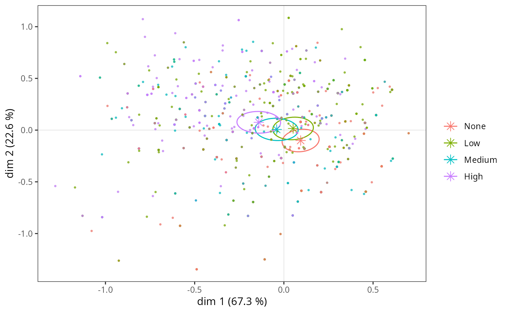
We find here graphically the results obtained with the typicality tests.
A homogeneity test is a combinatorial procedure that aims at comparing several groups of individuals. The question is to know if, on a given axis, the positions of two groups of individuals are significantly different (i.e. if the p-values are all very close to 0). The groups correspond to the different categories of a variable.
ht <- homog.test(mca, Taste$Educ)
round(ht$dim.1$p.values, 3) None Low Medium High
None 1 0 0 0
Low 0 1 0 0
Medium 0 0 1 0
High 0 0 0 1On axis 1, the mean points of the education level categories are all significantly different from each other.
round(ht$dim.2$p.values, 3) None Low Medium High
None 1 0.000 0.000 0
Low 0 1.000 0.223 0
Medium 0 0.223 1.000 0
High 0 0.000 0.000 1This is not the case on axis 2, where the “Low” and “Medium” categories are not significantly different (p-value = 0.22).
The lack of robustness of MCAs, or the absence of means to measure this robustness, is sometimes presented as one of the weaknesses of geometric data analysis. These criticisms are hardly relevant, especially since there are techniques for the “internal validation” of MCA results. Ludovic Lebart (2006; 2007) has proposed the use of bootstrap, i.e. resampling by random draw with replacement. This approach has the advantage of being non-parametric, i.e. it does not rely on any of the probabilistic assumptions of frequentist inference.
Lebart proposes several methods. The total bootstrap uses new MCAs computed from bootstrap replications of the initial data.
In the type 1 total bootstrap, the sign of the coordinates is corrected if necessary (the direction of the axes of an ACM being arbitrary).
In the type 2, the order of the axes and the sign of the coordinates are corrected if necessary.
In type 3, a procustean rotation is used to find the best overlap between the initial and replicated axes.
The partial bootstrap, on the other hand, does not compute a new MCA: it projects bootstrap replications of the initial data as supplementary elements of the MCA. It gives a more optimistic (or less demanding) view of the stability of the results than the total bootstrap.
Below, the results of a partial bootstrap (with 30 replications, a number generally considered sufficient by Lebart) are represented with confidence ellipses. We can see that if the points of the bootstrap replications of some categories are relatively scattered, this is only the case for categories far from the origin of the plane and does not change the interpretation of the MCA results: they are quite robust.
ggbootvalid_variables(mca, type = "partial", K = 30) + theme(legend.position = "none")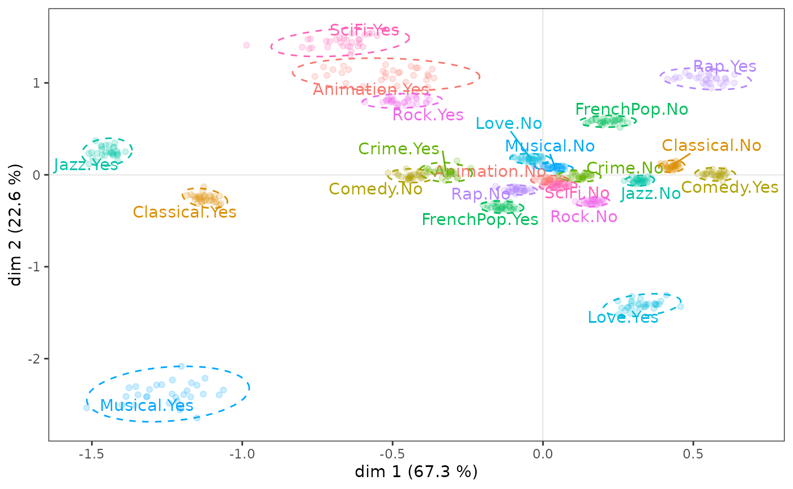
It is possible to conduct the same type of analysis for supplementary
variables with the function ggbootvalid_supvars(),
and to obtain the results of bootstrap replication calculations (without
graphing) with the functions bootvalid_variables()
and bootvalid_supvars().
MCA and automatic clustering techniques are often used together. For example, after having represented the data by factorial planes, one may wish to obtain a summary in the form of a typology, i.e. to group together individuals who are similar. To do this, we can use the original data or the coordinates of the individuals in the MCA cloud.
We perform here a Ascending Hierarchical Classification (AHC) from the coordinates of the individuals in the factorial plane (1,2), then a partition in 3 clusters.
The partition thus created can then be used for further analysis, for example by crossing it with supplementary variables, or more simply by representing the subclouds of individuals corresponding to the clusters of the typology, using convex hulls. A convex hull is the smallest convex polygon among those containing a set of points. In the context of MCA, convex hulls are an interesting graphical representation, especially if the subclouds represented do not overlap too much, as is the case here.
ggadd_chulls(icloud, mca, cluster)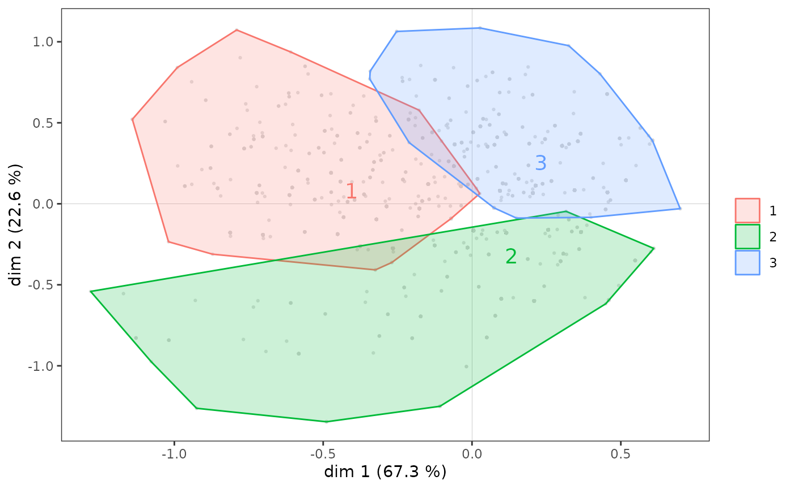
Some remarks:
The function quadrant()
also creates a typology of individuals, in a simpler way: each
individual is classified according to the part of the plane (the
“quadrant”) where it is located (northwest, northeast, southeast,
southwest).
There are many measures of distance / similarity. In the example
above, we used the Euclidean distance between the coordinates of the
individuals. If we perform an automatic clustering from the original
variables of the MCA, it is consistent to use the chi-2 distance,
the one used by correspondence analyses, which is possible with the
function dist.chi2().
The function ahc.plots()
proposes some graphical representations which give indications for the
choice of the number of clusters from the results of an AHC.
If the AHC is the most widespread automatic clustering technique
in geometric data analysis, there are many others (see for example the
package cluster).
The Class Specific Analysis (CSA) is an extension of MCA which allows to study a subcloud of individuals by taking into account the distribution of variables in the subcloud and in the whole cloud. It is thus a question of taking into account the fact that the structure of the subcloud does not exist in abstracto but in relation to the cloud in which it is included.
CSA is illustrated here using the subcloud of the most highly educated individuals.
ggcloud_variables(csa, shapes = FALSE, legend = "none")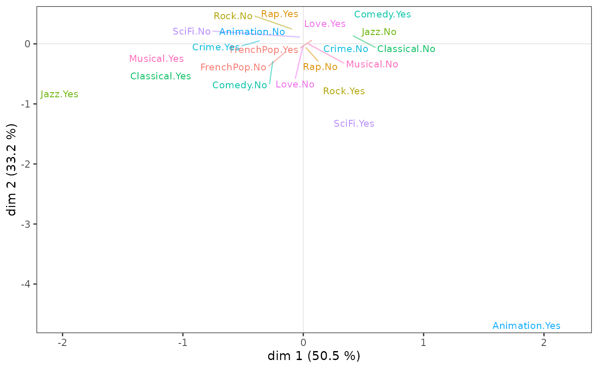
tabcontrib(csa, dim = 1)| Variable | Category | Weight | Quality of representation | Contribution (left) | Contribution (right) | Total contribution | Cumulated contribution | Contribution of deviation | Proportion to variable |
|---|---|---|---|---|---|---|---|---|---|
| Jazz | Yes | 145 | 0.629 | 41.85 | 51.08 | 51.08 | 17.25 | 33.76 | |
| No | 326 | 0.608 | 9.23 | ||||||
| Classical | Yes | 183 | 0.363 | 17.79 | 24.55 | 75.63 | 6.9 | 28.1 | |
| No | 290 | 0.359 | 6.76 | ||||||
| Animation | Yes | 34 | 0.149 | 12.43 | 12.43 | 88.06 | 4.64 | 35.66 |
We can see that, as in the MCA, listening to jazz and classical music structure axis 1, but this time much more strongly since these two variables alone contribute 75% to the construction of the axis.
tabcontrib(csa, dim = 2)| Variable | Category | Weight | Quality of representation | Contribution (left) | Contribution (right) | Total contribution | Cumulated contribution | Contribution of deviation | Proportion to variable |
|---|---|---|---|---|---|---|---|---|---|
| Animation | Yes | 34 | 0.651 | 59.05 | 59.05 | 59.05 | 22.06 | 35.66 | |
| SciFi | Yes | 38 | 0.149 | 9.51 | 9.51 | 68.55 | 2.53 | 24.72 | |
| Rock | Yes | 203 | 0.118 | 6.71 | 6.71 | 75.26 | 2.55 | 27.32 | |
| Jazz | Yes | 145 | 0.075 | 5.43 | 5.43 | 80.69 | 2.16 | 32.22 |
It is above all the taste for animation movies that contributes to the construction of axis 2.
In sum, the subcloud of the variables for the most highly educated individuals has points in common with that of the population as a whole, but also some very marked specificities.
The similarity between the MCA on all individuals and the CSA on the
most highly educated individuals can be measured by studying the angles
between the axes of the two analyses, with the function angles.csa().
angles.csa(csa, mca)$cosines
mca.dim1 mca.dim2 mca.dim3 mca.dim4 mca.dim5 mca.dim1&2 mca.dim1&3
csa.dim1 0.772 0.157 -0.051 0.415 0.486 0.787 0.773
csa.dim2 0.553 -0.481 -0.063 -0.511 -0.535 0.733 0.557
csa.dim3 -0.017 -0.680 -0.059 0.010 0.480 0.680 0.061
csa.dim4 0.223 0.182 0.385 -0.482 0.179 0.287 0.445
csa.dim5 -0.181 -0.296 -0.298 -0.350 0.154 0.347 0.348
mca.dim1&4 mca.dim1&5 mca.dim2&3 mca.dim2&4 mca.dim2&5 mca.dim3&4
csa.dim1 0.876 0.912 0.165 0.444 0.511 0.418
csa.dim2 0.753 0.770 0.485 0.702 0.719 0.515
csa.dim3 0.020 0.480 0.682 0.680 0.832 0.059
csa.dim4 0.531 0.286 0.426 0.515 0.256 0.617
csa.dim5 0.394 0.238 0.420 0.458 0.334 0.459
mca.dim3&5 mca.dim4&5
csa.dim1 0.489 0.639
csa.dim2 0.539 0.740
csa.dim3 0.483 0.480
csa.dim4 0.425 0.515
csa.dim5 0.335 0.382
$angles
mca.dim1 mca.dim2 mca.dim3 mca.dim4 mca.dim5 mca.dim1&2 mca.dim1&3
csa.dim1 39.5 81.0 87.1 65.5 60.9 38.1 39.4
csa.dim2 56.4 61.3 86.4 59.3 57.7 42.9 56.2
csa.dim3 89.0 47.2 86.6 89.4 61.3 47.2 86.5
csa.dim4 77.1 79.5 67.3 61.2 79.7 73.3 63.6
csa.dim5 79.6 72.8 72.7 69.5 81.2 69.7 69.6
mca.dim1&4 mca.dim1&5 mca.dim2&3 mca.dim2&4 mca.dim2&5 mca.dim3&4
csa.dim1 28.8 24.2 80.5 63.7 59.3 65.3
csa.dim2 41.1 39.7 61.0 45.4 44.0 59.0
csa.dim3 88.9 61.3 47.0 47.2 33.7 86.6
csa.dim4 57.9 73.4 64.8 59.0 75.2 51.9
csa.dim5 66.8 76.3 65.2 62.7 70.5 62.7
mca.dim3&5 mca.dim4&5
csa.dim1 60.7 50.2
csa.dim2 57.4 42.3
csa.dim3 61.1 61.3
csa.dim4 64.9 59.0
csa.dim5 70.4 67.5We can see that the first dimension of the CSA is clearly correlated to the first dimension of the MCA (and very little to the second dimension), but that the second dimension of the CSA is quite distinct from the first two dimensions of the MCA.
We will not go further here but let us specify that all the visualization and interpretation techniques described previously can be applied to the results of a CSA.
The instrumental variables approach is a form of approximation between geometric data analysis and regression methods. In practice, it consists of constructing a factorial space, from a first group of active variables, so that this space “explains” a second set of variables, called instrumental variables, as well as possible. The term “explain” is used here in a sense similar to analysis of variance (anova) or regression, in which an explanatory variable “explains” an explained variable, i.e. accounts for its variance as well as possible.
In the general case, there are several instrumental variables, which
can be categorical and/or numerical. When the active variables are all
numerical, we speak of Principal Component Analysis on Instrumental
Variables (function PCAiv()),
and when the active variables are all categorical, of Correspondence
Analysis on Instrumental Variables (function MCAiv()).
If the instrumental variable is unique and categorical, we can say
that it partitions the individuals into groups or “classes”. It is
therefore a question of carrying out an inter-class
analysis, by constructing a factorial space which accounts for
the differences between classes (functions bcPCA()
for cases where the active variables are continuous and bcMCA()
for those where they are categorical). It is also sometimes called
barycentric discriminant analysis or discriminant
correspondence analysis. If the active variables are continuous, a
variant is the factorial discriminant analysis (FDA),
also called descriptive discriminant analysis (function DA()),
which is equivalent to linear discriminant analysis in the
Anglo-Saxon literature. When the active variables are categorical, an
adaptation of the FDA has been proposed by Gilbert Saporta (1977) under
the name Disqual (function DAQ()).
As an example, we apply a barycentric discriminant analysis to construct the factorial space of the differences in tastes between individuals of different age categories.
between <- bcMCA(Taste[,1:11], class = Taste$Age, excl = junk)
factoextra::fviz_ca(between, repel = TRUE, invisible = "row.sup",
col.col = "dodgerblue3", col.row = "tomato2", title = "Between-class analysis")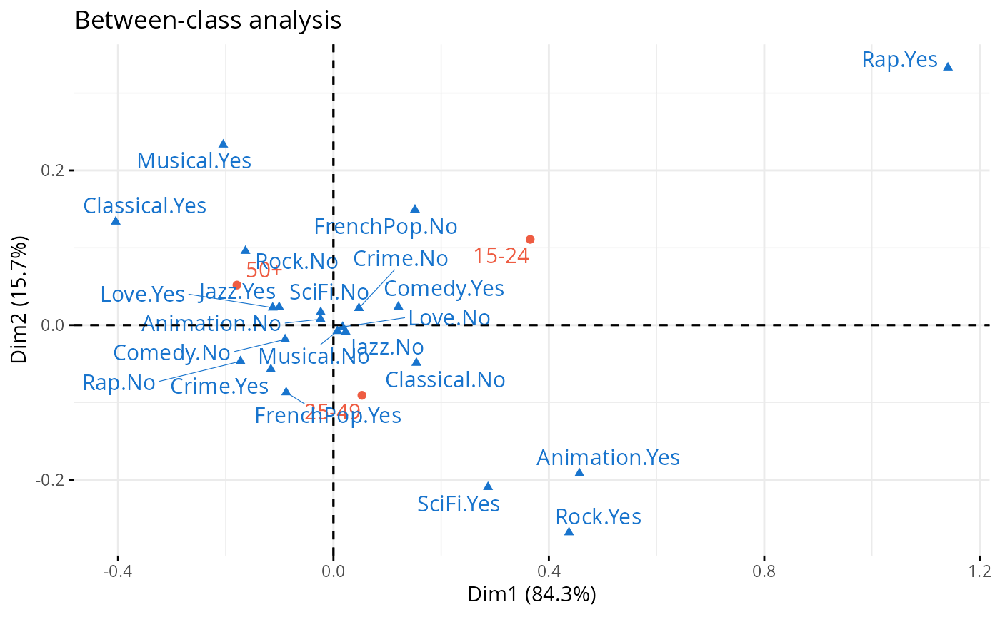
between$ratio[1] 0.04077871The first axis, or “discriminant factor”, orders the age categories and in particular contrasts listening to rap and rock music and taste for science fiction, on the side of the young, with listening to classical music and taste for musicals, on the side of the over 50s. But many of the taste categories are close to the center of axis 1 and are therefore not differentiated much by age. Age differences account for only 4% of the total inertia of the cloud.
Conditional analyses are another attempt to integrate geometric data analysis and regression. Their principle is to constrain the axes of the MCA to be independent (i.e. orthogonal) of one or more supplementary variables, i.e. to construct a MCA “all things (of these supplementary variables) equal” (Bry et al, 2016). Comparing the results of the original MCA with those of the conditional MCA is a way to study structure effects.
In the general case, there are several variables whose effect must be
“eliminated” and these are sometimes called orthogonal
instrumental variables. We will therefore carry out a
Principal Component Analysis on Orthogonal Instrumental
Variables if the active variables are all numerical (function PCAoiv())
and a Correspondence Analysis on Orthogonal Instrumental
Variables if the active variables are all categorical (function MCAoiv()).
As for the discriminant analyses (previous sub-section), if the
orthogonal instrumental variable is unique and categorical, it
partitions the individuals into “classes”. But this time we are in the
context of an intra-class analysis: the aim is to
construct the factorial space that accounts for the structures common to
the different classes. When the active variables are categorical, a
conditional MCA (Escofier, 1990 and function wcMCA())
is performed, of which the standardized MCA (Bry et al,
2016) is an alternative (function stMCA()).
The conditional approach also applies to the case of numerical active
variables (function wcPCA()).
We now construct the space of tastes common to women and men, or, put differently, neutralizing the gendered differences. In the plane(1,2), the results obtained are very similar to those of the MCA. The main difference concerns the (very female) taste for love movies, which is no longer distinguishable on axis 2.
The small size of the differences between the two analyses is confirmed by the fact that the within-class analysis accounts for almost 99% of the total inertia of the cloud.
within <- wcMCA(Taste[,1:11], class = Taste$Gender, excl = junk)
ggcloud_variables(within, legend = "none") + ggtitle("Within-class analysis")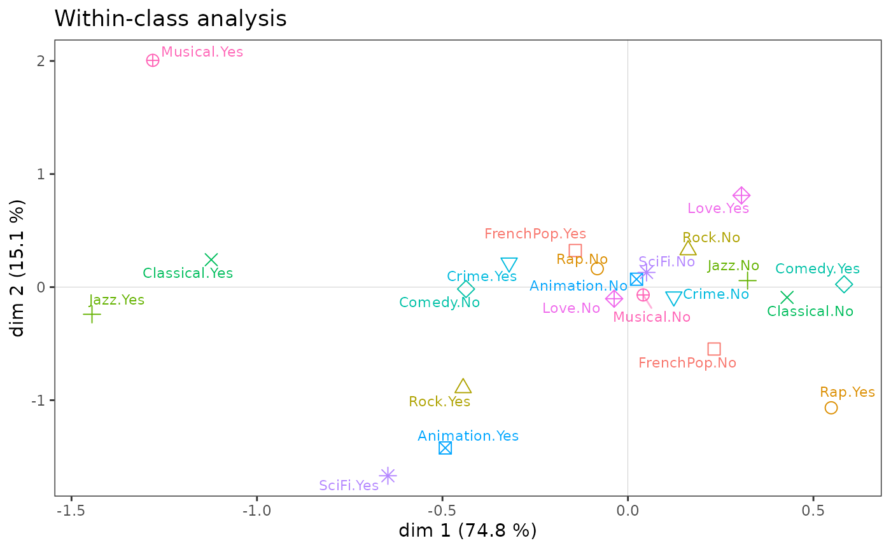
within$ratio[1] 0.9896936Another case arises when the active variables are divided into several homogeneous groups and these groups play a symmetrical role (unlike the approaches with instrumental variables).
With two groups of variables, one can perform a co-inertia
analysis (Tucker, 1958; Dolédec and Chessel, 1994) in order to
study the structures common to both groups (functions coiMCA()
if the groups are composed of categorical variables, coiPCA()
if they are composed of numerical variables).
A co-inertia analysis is applied to a new dataset, in which a group of 5 variables describes the tastes for different musical genres, and a second group of 2 variables describes the frequency of listening (in general or “focused”, i.e. doing nothing else).
data(Music)
Xa <- Music[,1:5] # music tastes
Xb <- Music[,8:9] # frequency of listening
coin <- coiMCA(Xa, Xb,
excl.a = c("FrenchPop.NA","Rap.NA","Rock.NA","Jazz.NA","Classical.NA"))
factoextra::fviz_ca(coin, repel = TRUE, title = "Co-inertia analysis",
col.col = "dodgerblue3", col.row = "tomato2")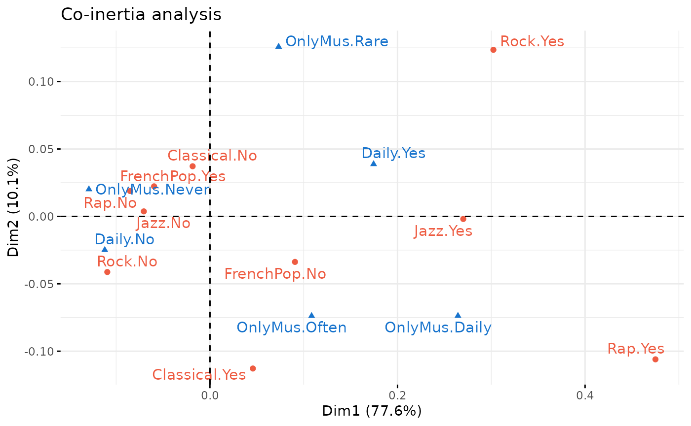
Examination of the first axis shows that rap, jazz and rock are on the side of daily listening and frequent or daily focused listening, while taste for French popular music is on the side of non-daily listening and no focused listening.
Multiple Factor Analysis (MFA, see Escofier and
Pagès, 1994) makes it possible to deal with two groups of variables
or more. It takes into account both the structures specific to
each group and the structures common to the groups. The function multiMCA()
makes it possible to carry out MFA using specific MCA or Class Specific
Analysis.
Here, we use the Taste data. One group of variables
describes the listening to music genres and the other the taste for
movie genres, and the MFA uses specific MCAs.
mca1 <- speMCA(Taste[,1:5], excl = c(3,6,9,12,15))
mca2 <- speMCA(Taste[,6:11], excl = c(3,6,9,12,15,18))
mfa <- multiMCA(list(mca1,mca2))
ggcloud_variables(mfa, shapes=FALSE, legend="none") + ggtitle("Analyse factorielle multiple")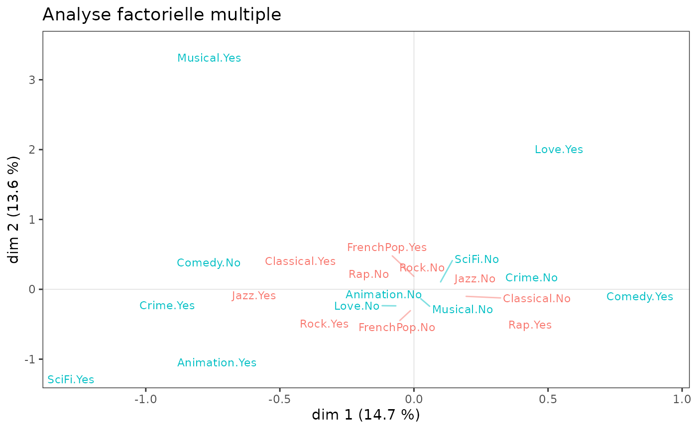
We observe that it is mainly the film variables that structure the
plane (1,2). An MFA is of little interest here, because the two spaces
are very little related: the RV coefficient is 1.4% (the RV
coefficient - function rvcoef()
- is a kind of correlation coefficient between groups of variables).
rvcoef(mca1$ind$coord, mca2$ind$coord)[1] 0.01412768NB: There is another approach to deal with the case of several groups
of variables, whether these groups play a symmetrical role or not, it is
the PLS approach (Partial Least Square, see Tenenhaus,
1998). Most of these techniques are available in the package plsdepot,
developed by Gaston
Sanchez.
When dealing with a contingency table with a dependence structure, i.e. when the role of the two variables is not symmetrical but, on the contrary, one can be considered as predicting the other, nonsymmetric correspondence analysis (NSCA) can be used to represent the predictive structure in the table and to assess the predictive power of the predictor variable.
Technically, NSCA is very similar to the standard CA, the main difference being that the columns of the contingency table are not weighted by their rarity (i.e. the inverse of the marginal frequencies).
Here we study data on the distribution of various domestic tasks in couples. We consider that the type of domestic task is predictive of who performs that task.
Wife Alternating Husband Jointly
Laundry 156 14 2 4
Main_meal 124 20 5 4
Dinner 77 11 7 13
Breakfeast 82 36 15 7
Tidying 53 11 1 57
Dishes 32 24 4 53
Shopping 33 23 9 55
Official 12 46 23 15
Driving 10 51 75 3
Finances 13 13 21 66
Insurance 8 1 53 77
Repairs 0 3 160 2
Holidays 0 1 6 153The biplots of an NSCA reflect the dependency structure of the contingency table and thus should not be interpreted as the planes of a standard CA. A first principle is that the graph displays the centred row profiles. A second principle is that the relationships between rows and columns are contained in their inner products : the rows are depicted as vectors, also called biplot axes, and the columns are projected on these vectors. If some columns have projections on the row vector far away from the origin, then the row has a comparatively large increase in predictability, and its profile deviates considerably from the marginal one, especially for that column.
For more detailed interpretational guidelines, see Kroonenberg and Lombardo (1999, pp.377-378).
nsca <- nsCA(housetasks)
nsca.biplot(nsca)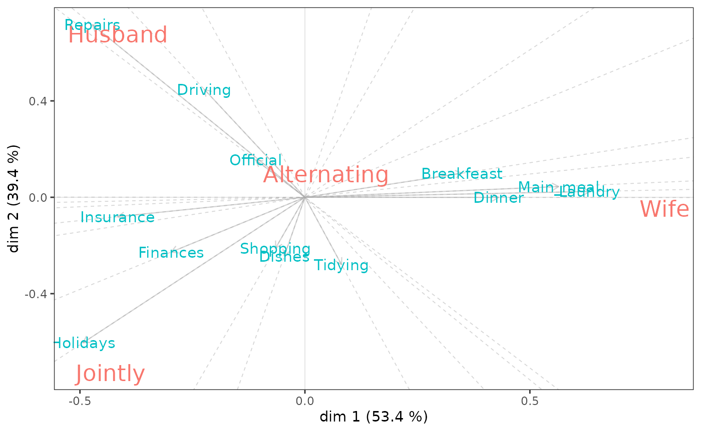
nsca$GK.tau[1] 0.4067139We find that knowing that household tasks involve laundry or meal preparation “increases predictive performance” of female tasks. Repairs are associated with male tasks and vacation planning with joint tasks.
The Goodman and Kruskal tau is an asymmetric measure of global association. Its high value (0.41) here indicates that the type of household task does predict who performs the task.
The MCA and PCA variants offered in GDAtools are, as far as possible,
intended to create objects similar to those created by the
PCA(), MCA() and CA() functions
of the [FactoMineR] package (https://cran.r-project.org/package=FactoMineR). This
allows these objects to be (mostly) compatible with a number of
functions for interpreting and visualizing the results:
the graphical functions of the FactoMineR
package,
the package Factoshiny
for the interactive construction of graphs,
the amazing package explor, developed
by Julien Barnier, for interactive
exploration of results,
the package factoextra
to extract and visualize the results.
Most of the graphical functions in GDAtools have been
designed with the “grammar” (and default color palettes) of ggplot2 in mind,
and in such a way as to be able to customize colors in a very flexible
way. One can indeed use scale_color_* functions, like
scale_color_grey() for gray scales,
scale_color_brewer() for ColorBrewer
palettes, scale_color_manual() for using custom palettes,
or paletteer::scale_color_paletteer_d() from the package paletteer
for accessing a large number of color palettes existing in R (a list of
which is available here).
However, one must be careful to choose a palette with at least as many
colors as there are variables to represent (otherwise some variables
will remain invisible).
For example, to display the cloud of variables with the
ColorBrewer palette “Paired1”, we will proceed as
follows.
ggcloud_variables(mca) + scale_color_brewer(palette = "Paired")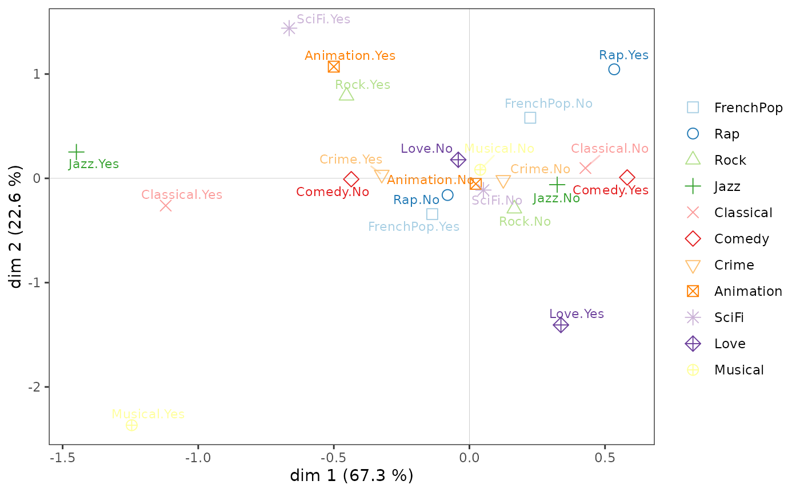